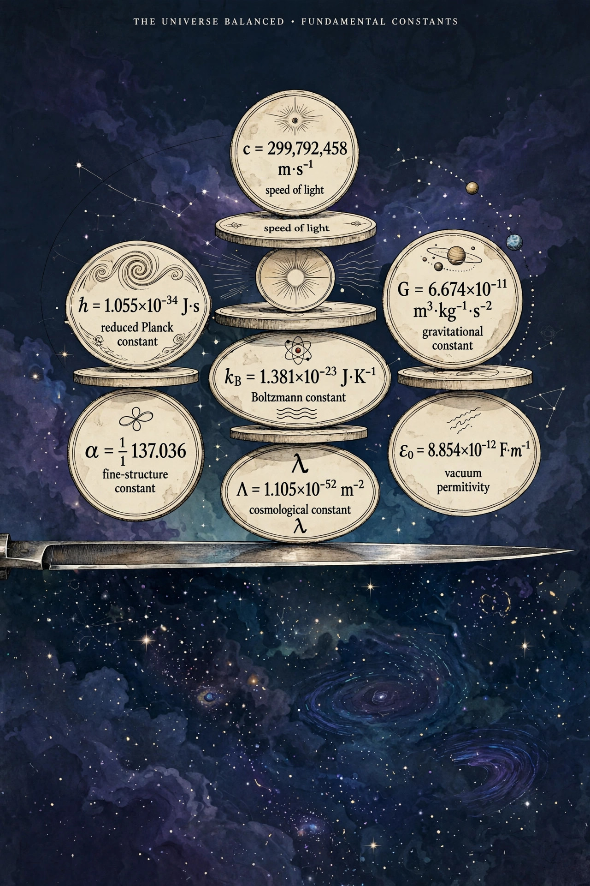

Fine-tuning (physics)
In theoretical physics, fine-tuning refers to the apparent need for certain fundamental physical constants and parameters to take extremely precise values in order for the universe to permit the existence of complex structures and life. The term is used both for the sensitivity of physical theories to their parameters — a technical issue affecting models such as the Standard Model — and in cosmology, where small changes in constants would apparently produce a universe inhospitable to life.

Examples
Frequently cited examples include the cosmological constant, whose observed value is some 120 orders of magnitude smaller than naive quantum-field-theory estimates yet, if slightly larger, would have blown the early universe apart before galaxies could form; the ratio of the electromagnetic to gravitational force between fundamental particles; the masses of the light quarks, which govern nuclear fusion in stars and the production of carbon and oxygen; and the initial low-entropy state of the early universe. Fred Hoyle famously noted that a key resonance in the carbon-12 nucleus sits at just the energy needed for stars to manufacture carbon, a coincidence he took to suggest deliberate setting of the constants.
Explanations and debate
Several responses to apparent fine-tuning have been proposed. Some physicists argue the constants may be fixed uniquely by a deeper theory yet to be found. Others invoke the anthropic principle together with a multiverse: if constants vary across many universes, observers will necessarily find themselves in one of the rare universes compatible with observers. String theory's "landscape" of possible vacua is sometimes invoked to supply such variety. Theistic interpretations read fine-tuning as evidence of design, while critics counter that the relevant probabilities cannot be defined rigorously, that life might arise under other conditions, and that some claimed fine-tunings dissolve when parameters are varied jointly rather than one at a time.
Fine-tuning in particle physics
In model-building, fine-tuning also names the unnatural cancellation between large quantities required to keep a calculated parameter small — most notably the Higgs boson mass (the hierarchy problem). Quantified by measures such as that of Barbieri and Giudice, this kind of fine-tuning motivated proposals including supersymmetry and technicolor, and remains a guide — contested after null results from the Large Hadron Collider — for physics beyond the Standard Model.
See also: Anthropic principle · Multiverse · Cosmological constant · Hierarchy problem